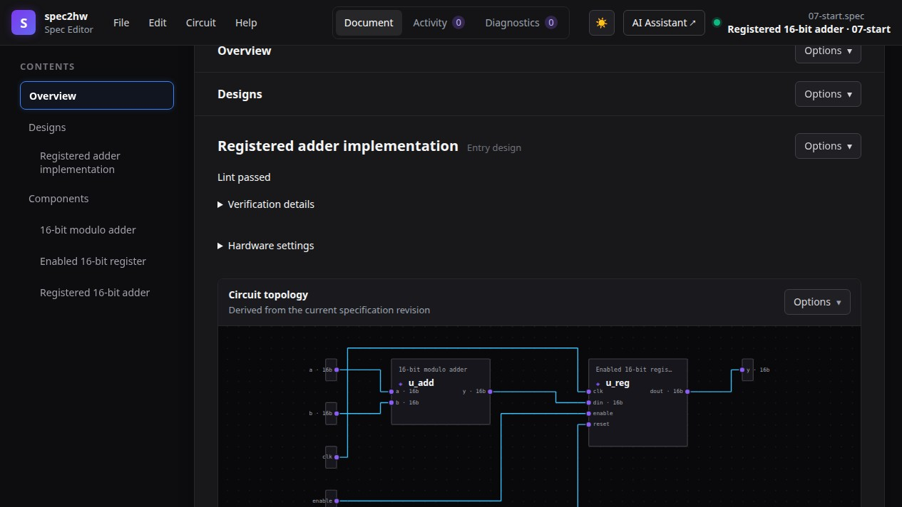

CORE 07 / 09 · 7 MINUTES
Generate an RTL project
Obtain and lint RTL generated from the saved hierarchical Design.
Before you start
Spec Editor, Verilator 5.x, GNU Make, and access to the Activity output directory. No model key is required.
Actions
- Open the saved Design in Spec Editor. You can select Verify Design to inspect diagnostics before generation. A separate verification is optional.
- Select the Design’s Options → Generate RTL. The service verifies the saved target and reachable implementations first. If verification passes, it starts the job. Check the target name and wait for the terminal job result.


- Read the generation report. Record the saved target, source revision, output path, file list, and any diagnostics. Obtain the complete project from the reported output directory on the service host. Use available artifact download links for individual published artifacts.
- Inspect the manifest and RTL files. Expect one containing structural module and two leaf implementations. Find the adder assignment and register body. Module filenames come from the manifest; they need not equal display names.
- In a terminal on the machine with that published project, change to its reported directory and run:
Record the exit status. Keep the complete project and lint log under the tutorial TEMP_ directory. Do not run against a different sample project.make lint

Check your result
The actual published project contains the expected hierarchy and seven nets. Its make lint command exits zero. Functional simulation remains unverified.
Try it yourself
Use Options → Export target details (JSON) on the containing Component. Inspect the recorded revision and all reachable Sections. This diagnostic Activity does not verify RTL.
If it fails
If verification fails or the required tool is unavailable, read the diagnostic and correct the saved source or environment. No generation job starts until verification passes. If no complete project or output path is available, record the gap and stop the lint exercise. A successful job alone does not prove that you obtained its files.
Continue
NEXT GUIDEExport and reopen your workReference: rtl generation · Complete example